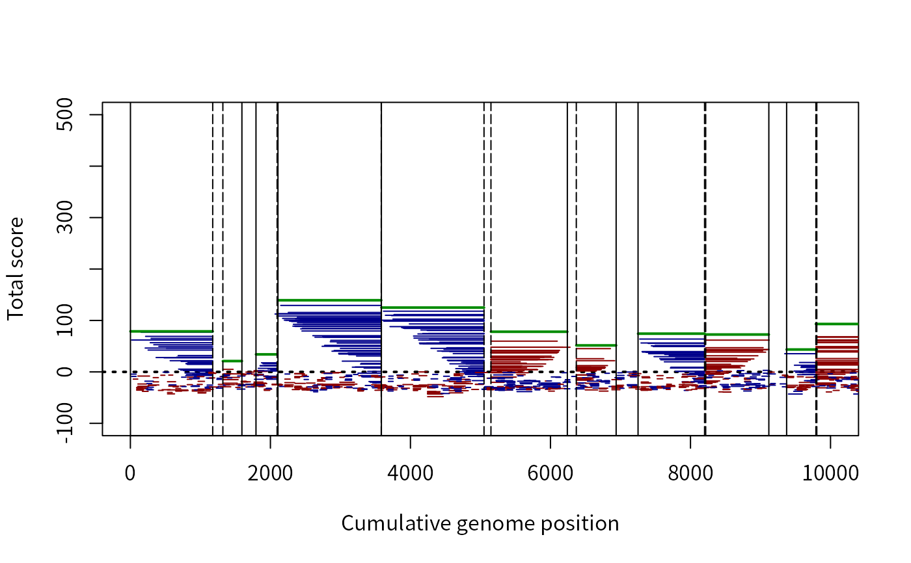
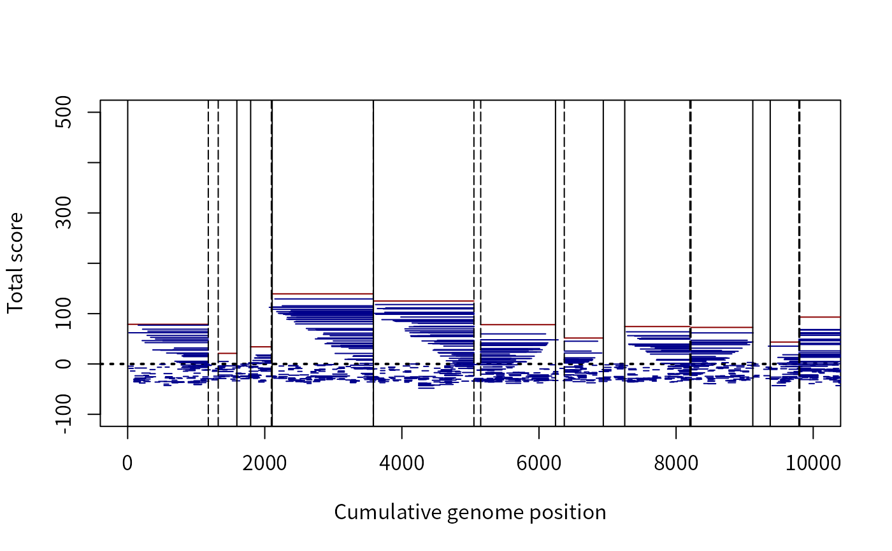
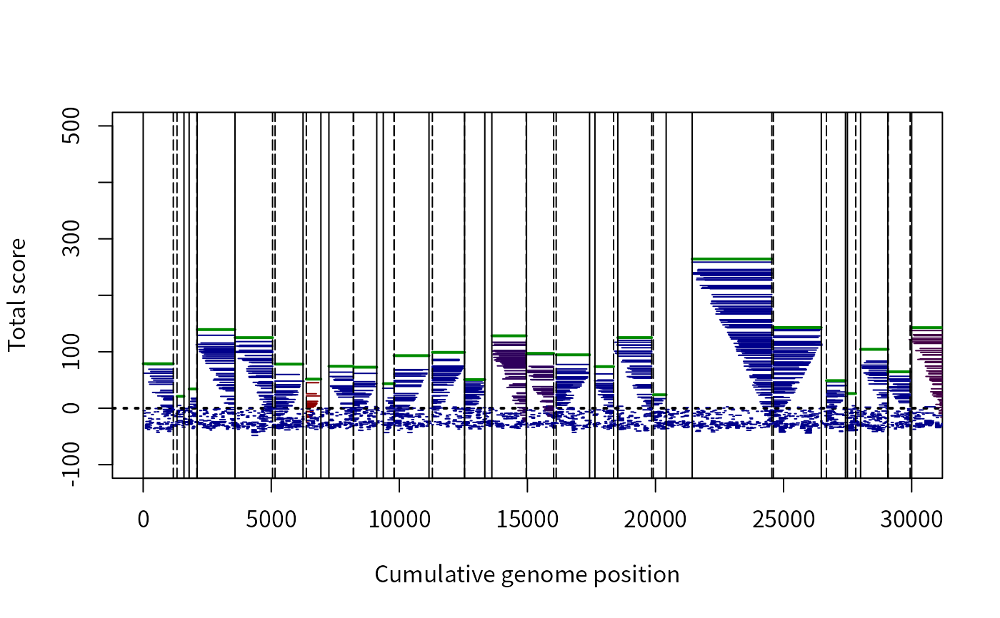
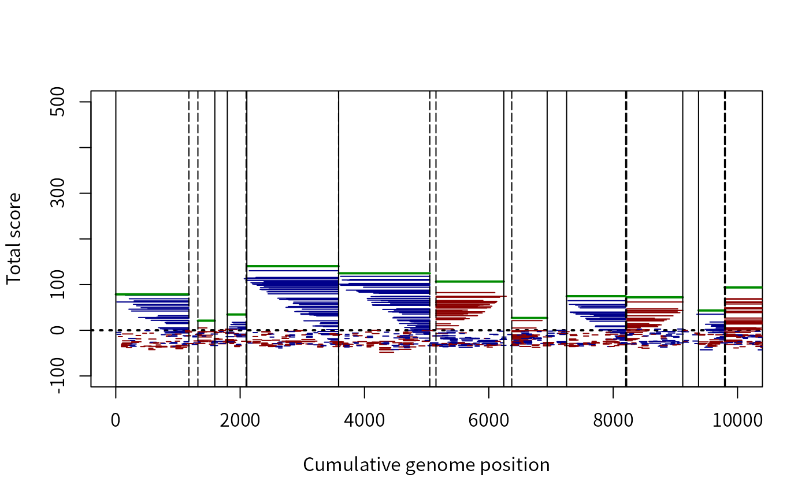
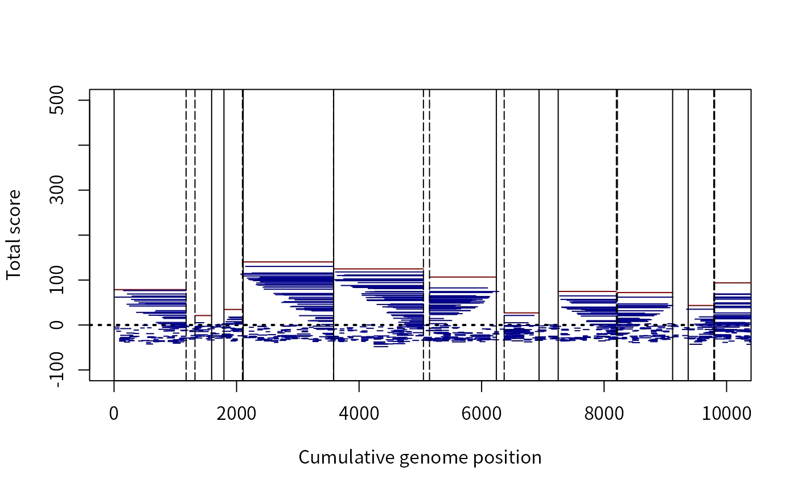
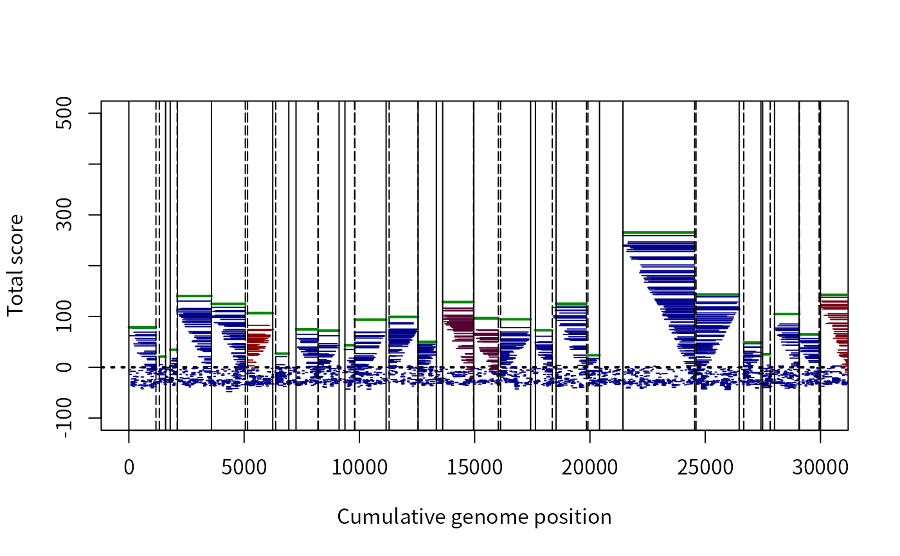

Genes objects and accessors
Genes.RdGene prediction consist of delimiting the boundaries of regions that
function as genes within a genome. Class Genes provides objects and
functions for storing the boundaries of genes and associated information
resulting from gene prediction.
Gene prediction consist of delimiting the boundaries of regions that
function as genes within a genome. Class Genes provides objects and
functions for storing the boundaries of genes and associated information
resulting from gene prediction.
Arguments
- x
An object of class
Genes.- xlim
Numeric vector of length 2 specifying the x-axis limits for plotting.
- ylim
Numeric vector of length 2 specifying the y-axis limits for plotting.
- interact
Logical determining whether the plot is interactive. If
TRUE, clicking the plot on the right or left side will scroll one frame in that direction. To end interaction, either right-click, press the escape key, or press the stop button depending on the graphics device in use.- colorBy
Character string indicating the name of the column in
xthat should be used for coloring. Unambiguous abbreviations are also permitted.- colorRamp
A function that will return
ncolors when given a numbern. Examples arerainbow,heat.colors,terrain.colors,cm.colors, or (the default)colorRampPalette.- colorGenes
Character string specifying the color of genes, or
NAto color genes according tocolorBy.- i
Numeric or character vector of row indices to extract from
x.- j
Numeric or character vector of column indices to extract from
x. Ifjis missing, all columns are included and the returned object will also belong to classGenes.- ...
Other optional parameters.
Details
Objects of class Genes are stored as numeric matrices containing
information pertaining to gene predictions. The matrix columns include the
index ("Index") of the corresponding sequence in the original genome,
the strand ("Strand") where the gene is located (either "+"
(0) or "-" (1), the beginning ("Begin") and
ending ("End") positions of the gene, scores acquired during
prediction, and whether (!= 0) or not (0) the region was
predicted to be a gene. Note that the start of the gene is at the beginning
position when the strand is "+" and end when the strand is
"-". By convention, rows with negative values in the "Gene"
column represent non-coding RNAs and rows with positive values represent
protein coding genes.
The plot method will show the total score of each prediction along
the genome. This is most useful when displaying the result of setting
allScores to TRUE in FindGenes. Here, possible genes
on either strand will be shown (by default), with the predicted genes
highlighted. The beginning (solid) and ending (dashed) positions are
denoted by vertical lines. Note that the x-axis is cumulative genome
position, and changes between genome sequences indices are demarcated by
dashed vertical lines.
Objects of class Genes are stored as numeric matrices containing
information pertaining to gene predictions. The matrix columns include the
index ("Index") of the corresponding sequence in the original genome,
the strand ("Strand") where the gene is located (either "+"
(0) or "-" (1), the beginning ("Begin") and
ending ("End") positions of the gene, scores acquired during
prediction, and whether (!= 0) or not (0) the region was
predicted to be a gene. Note that the start of the gene is at the beginning
position when the strand is "+" and end when the strand is
"-". By convention, rows with negative values in the "Gene"
column represent non-coding RNAs and rows with positive values represent
protein coding genes.
The plot method will show the total score of each prediction along
the genome. This is most useful when displaying the result of setting
allScores to TRUE in FindGenes. Here, possible genes
on either strand will be shown (by default), with the predicted genes
highlighted. The beginning (solid) and ending (dashed) positions are
denoted by vertical lines. Note that the x-axis is cumulative genome
position, and changes between genome sequences indices are demarcated by
dashed vertical lines.
Author
Erik Wright eswright@pitt.edu
Examples
# import a test genome
fas <- system.file("extdata",
"Chlamydia_trachomatis_NC_000117.fas.gz",
package="DECIPHER")
genome <- readDNAStringSet(fas)
x <- FindGenes(genome, allScores=TRUE)
#> Iter Models Start Motif Init Fold UpsNt Term RBS Auto Stop Genes
#> 1 1 18.40 _ 886
1 1 18.40 \ 886
1 1 18.40 | 886
1 1 18.40 / 886
1 1 18.40 _ 886
1 1 18.40 \ 886
1 1 18.40 | 886
1 1 18.40 / 886
1 1 18.40 _ 886
2 12 18.40 0.48 0.90 888
3 15 18.38 0.53 1.16 0.40 1.41 891
4 14 15.59 0.51 1.26 0.49 1.77 0.24 894
5 14 15.63 0.51 1.26 0.48 1.82 0.25 0.98 0.10 0.07 897
6 14 15.62 0.51 1.24 0.50 1.91 0.25 1.04 0.10 0.07 897
7 12 15.60 0.51 1.25 0.48 1.92 0.25 1.03 0.10 0.07 896
8 15 15.59 0.51 1.25 0.51 1.94 0.25 1.06 0.10 0.07 896
9 12 15.59 0.52 1.25 0.51 1.95 0.26 1.06 0.10 0.07 895
10 12 15.58 0.52 1.25 0.52 1.95 0.26 1.09 0.10 0.07 894
11 12 15.58 0.52 1.25 0.52 1.96 0.26 1.10 0.10 0.07 894
12 11 15.57 0.52 1.25 0.50 1.97 0.26 1.11 0.10 0.07 894
13 12 15.57 0.52 1.25 0.50 1.98 0.26 1.12 0.10 0.07 894
14 11 15.57 0.52 1.25 0.50 1.98 0.26 1.13 0.10 0.07 894
15 14 15.57 0.52 1.25 0.51 1.99 0.26 1.12 0.10 0.07 894
16 14 15.57 0.52 1.25 0.52 1.99 0.26 1.14 0.10 0.07 894
#>
#> Time difference of 14.13 secs
#>
x
#> Genes object of size 109,490 specifying:
#> 894 protein coding genes from 66 to 5,361 nucleotides.
#> 108,596 open reading frames from 60 to 5,370 nucleotides.
#>
#> Index Strand Begin End TotalScore ... Gene
#> 1 1 0 1 1176 78.80 ... 1
#> 2 1 0 2 82 -4.38 ... 0
#> 3 1 0 16 1176 61.98 ... 0
#> 4 1 0 17 82 -8.85 ... 0
#> [ reached 'max' / getOption("max.print") -- omitted 2 rows ]
#> ... with 109,484 more rows.
head(unclass(x)) # the underlying structure
#> Index Strand Begin End TotalScore LengthScore CodingScore CodonModel
#> 1 1 0 1 1176 78.796288 39.252787 40.3002513 1
#> CouplingScore StartScore StopScore InitialCodonScore TerminationCodonScore
#> 1 3.2383375 0.0000000 0.187984 -3.86299429 -0.2739789
#> RibosomeBindingSiteScore AutocorrelationScore UpstreamNucleotideScore
#> 1 0.00000 -0.04609886 0.000000
#> UpstreamMotifScore FoldingScore FractionReps Gene
#> 1 0.000000 0.0000000 1 1
#> [ reached getOption("max.print") -- omitted 5 rows ]
plot(x) # default coloring by "Strand"

# color by RBS score (blue is weak/low, red is strong/high)
plot(x, colorBy="RibosomeBindingSiteScore", colorGenes=NA)
# color by fraction of times a gene was chosen
plot(x, colorBy="FractionReps", colorGenes=NA)

# color by which codon model was selected for each ORF
plot(x, colorBy="CodonModel", xlim=c(1, 3e4))

# import a test genome
fas <- system.file("extdata",
"Chlamydia_trachomatis_NC_000117.fas.gz",
package="DECIPHER")
genome <- readDNAStringSet(fas)
x <- FindGenes(genome, allScores=TRUE)
#> Iter Models Start Motif Init Fold UpsNt Term RBS Auto Stop Genes
#> 1 1 18.40 _ 886
1 1 18.40 \ 886
1 1 18.40 | 886
1 1 18.40 / 886
1 1 18.40 _ 886
1 1 18.40 \ 886
1 1 18.40 | 886
1 1 18.40 / 886
1 1 18.40 _ 886
2 12 18.40 0.48 0.90 888
3 15 18.38 0.53 1.16 0.42 1.41 890
4 14 15.60 0.51 1.25 0.47 1.75 0.24 894
5 12 15.62 0.51 1.25 0.49 1.82 0.25 0.96 0.10 0.07 897
6 13 15.59 0.51 1.24 0.49 1.93 0.25 1.05 0.10 0.07 897
7 13 15.58 0.51 1.25 0.51 1.93 0.25 1.07 0.10 0.07 898
8 13 15.57 0.51 1.25 0.52 1.95 0.25 1.09 0.10 0.07 897
9 13 15.56 0.51 1.26 0.51 1.96 0.25 1.08 0.10 0.07 898
10 13 15.56 0.51 1.26 0.52 1.96 0.25 1.12 0.10 0.07 897
#>
#> Time difference of 10.2 secs
#>
x
#> Genes object of size 109,490 specifying:
#> 897 protein coding genes from 66 to 5,361 nucleotides.
#> 108,593 open reading frames from 60 to 5,370 nucleotides.
#>
#> Index Strand Begin End TotalScore ... Gene
#> 1 1 0 1 1176 78.65 ... 1
#> 2 1 0 2 82 -4.63 ... 0
#> 3 1 0 16 1176 62.03 ... 0
#> 4 1 0 17 82 -8.67 ... 0
#> [ reached 'max' / getOption("max.print") -- omitted 2 rows ]
#> ... with 109,484 more rows.
head(unclass(x)) # the underlying structure
#> Index Strand Begin End TotalScore LengthScore CodingScore CodonModel
#> 1 1 0 1 1176 78.649343 39.233990 40.8310925 1
#> CouplingScore StartScore StopScore InitialCodonScore TerminationCodonScore
#> 1 2.9226209 0.0000000 0.1909784 -3.95004382 -0.3401371
#> RibosomeBindingSiteScore AutocorrelationScore UpstreamNucleotideScore
#> 1 0.0000000 -0.23915805 0.000000
#> UpstreamMotifScore FoldingScore FractionReps Gene
#> 1 0.000000 0.0000000 1 1
#> [ reached getOption("max.print") -- omitted 5 rows ]
plot(x) # default coloring by "Strand"

# color by RBS score (blue is weak/low, red is strong/high)
plot(x, colorBy="RibosomeBindingSiteScore", colorGenes=NA)
# color by fraction of times a gene was chosen
plot(x, colorBy="FractionReps", colorGenes=NA)

# color by which codon model was selected for each ORF
plot(x, colorBy="CodonModel", xlim=c(1, 3e4))
